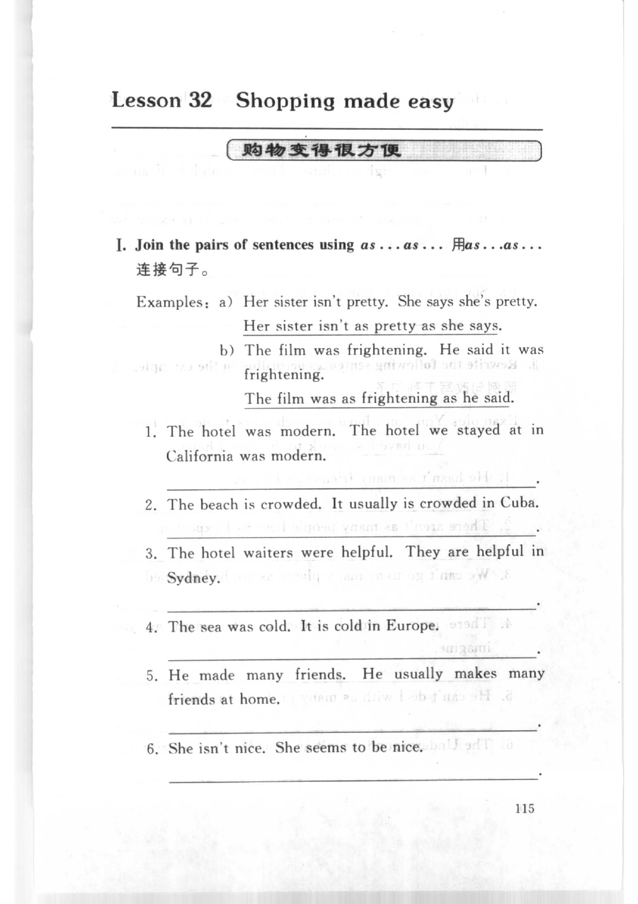
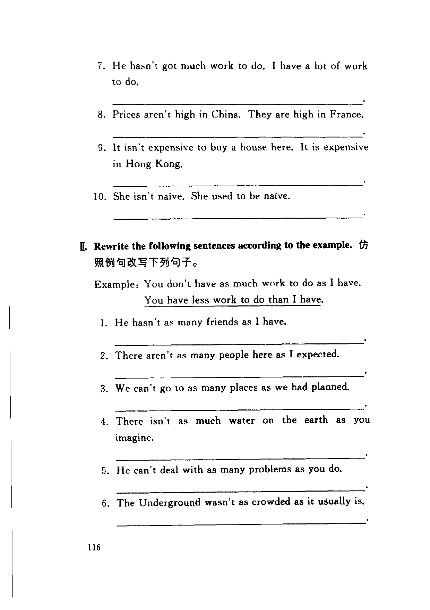
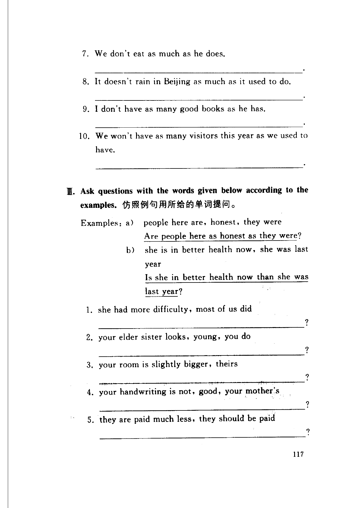
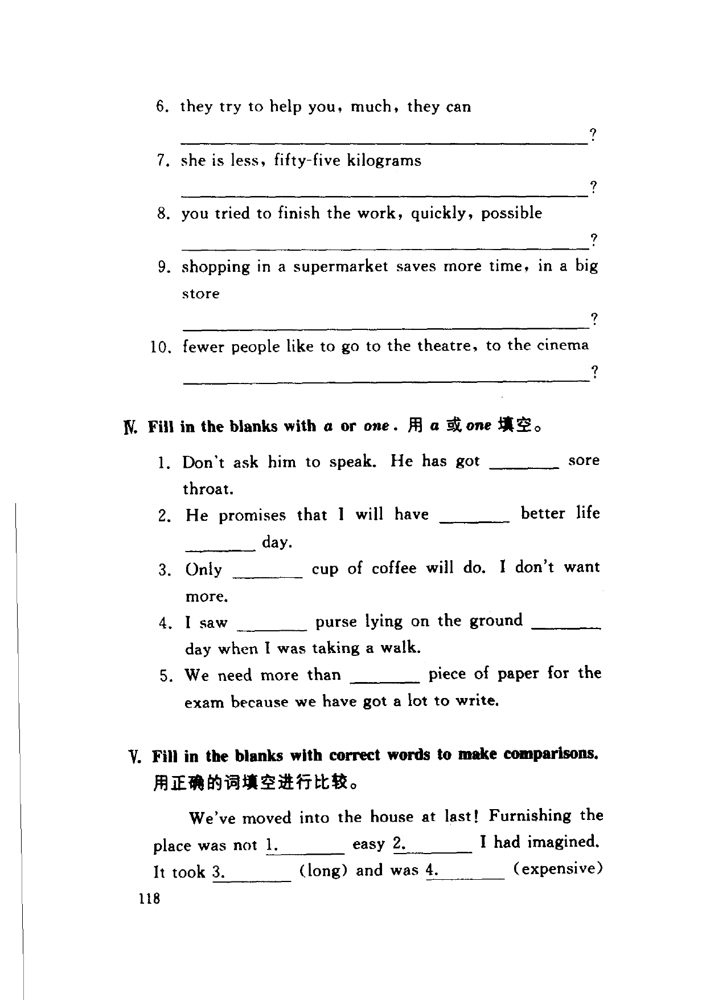
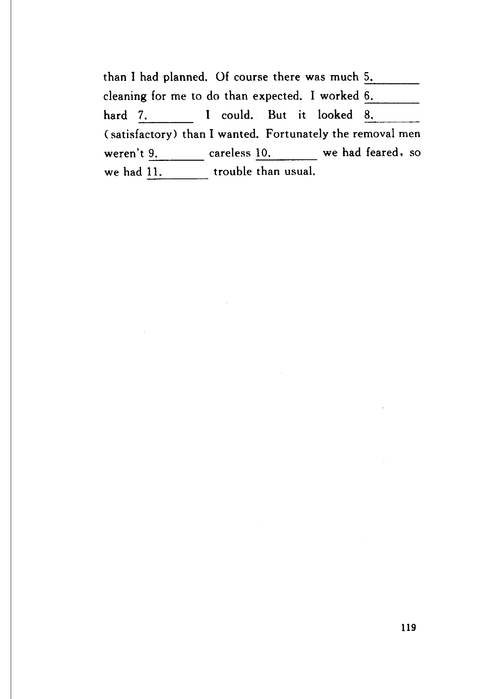

Grammar exercises · 语法练习
I. Join the pairs of sentences using as . . . as . . .
用as . . .as . . .连接句子。
Examples: a) Her sister isn't pretty. She says she's pretty.
Her sister isn't as pretty as she says.
b) The film was frightening. He said it was frightening.
The film was as frightening as he said.
-
I. as...as — The hotel was modern. The hotel we stayed at in California was modern.
-
I. as...as — The beach is crowded. It usually is crowded in Cuba.
-
I. as...as — The hotel waiters were helpful. They are helpful in Sydney.
-
I. as...as — The sea was cold. It is cold in Europe.
-
I. as...as — He made many friends. He usually makes many friends at home.
-
I. as...as — She isn't nice. She seems to be nice.
-
I. as...as — He hasn't got much work to do. I have a lot of work to do.
-
I. as...as — Prices aren't high in China. They are high in France.
-
I. as...as — It isn't expensive to buy a house here. It is expensive in Hong Kong.
-
I. as...as — She isn't naive. She used to be naive.
II. Rewrite the following sentences according to the example.
仿照例句改写下列句子。
Example: You don't have as much work to do as I have.
You have less work to do than I have.
-
II. Rewrite — He hasn't as many friends as I have.
-
II. Rewrite — There aren't as many people here as I expected.
-
II. Rewrite — We can't go to as many places as we had planned.
-
II. Rewrite — There isn't as much water on the earth as you imagine.
-
II. Rewrite — He can't deal with as many problems as you do.
-
II. Rewrite — The Underground wasn't as crowded as it usually is.
-
II. Rewrite — We don't eat as much as he does.
-
II. Rewrite — It doesn't rain in Beijing as much as it used to do.
-
II. Rewrite — I don't have as many good books as he has.
-
II. Rewrite — We won't have as many visitors this year as we used to have.
III. Ask questions with the words given below according to the examples.
仿照例句用所给的单词提问。
Examples: a) people here are, honest, they were
Are people here as honest as they were?
b) she is in better health now, she was last year
Is she in better health now than she was last year?
-
III. Questions — she had more difficulty, most of us did
-
III. Questions — your elder sister looks, young, you do
-
III. Questions — your room is slightly bigger, theirs
-
III. Questions — your handwriting is not, good, your mother's
-
III. Questions — they are paid much less, they should be paid
-
III. Questions — they try to help you, much, they can
-
III. Questions — she is less, fifty-five kilograms
-
III. Questions — you tried to finish the work, quickly, possible
-
III. Questions — shopping in a supermarket saves more time, in a big store
-
III. Questions — fewer people like to go to the theatre, to the cinema
IV. Fill in the blanks with a or one.
用 a 或 one 填空。
-
IV. a or one — Don't ask him to speak. He has got
1.sore throat. -
IV. a or one — He promises that I will have
1.better life2.day. -
IV. a or one — Only
1.cup of coffee will do. I don't want more. -
IV. a or one — I saw
1.purse lying on the ground2.day when I was taking a walk. -
IV. a or one — We need more than
1.piece of paper for the exam because we have got a lot to write.
V. Fill in the blanks with correct words to make comparisons.
用正确的词填空进行比较。
We've moved into the house at last! Furnishing the place was not 1. easy 2. I had imagined. It took 3. (long) and was 4. (expensive) than I had planned. Of course there was much 5. cleaning for me to do than expected. I worked 6. hard 7. I could. But it looked 8. (satisfactory) than I wanted. Fortunately the removal men weren't 9. careless 10. we had feared, so we had 11. trouble than usual.
-
V. Comparisons — was not
1.easy -
V. Comparisons — easy
2.I had imagined -
V. Comparisons — It took
3.(long) -
V. Comparisons — was
4.(expensive) -
V. Comparisons — much
5.cleaning -
V. Comparisons — I worked
6.hard -
V. Comparisons — hard
7.I could -
V. Comparisons — looked
8.(satisfactory) -
V. Comparisons — weren't
9.careless -
V. Comparisons — careless
10.we had feared -
V. Comparisons — we had
11.trouble
Original images · 原图对照
Expand a page to compare it with the transcription. Open the original in a new tab to zoom in.
展开原图核对文字，也可以在新标签页打开原图放大查看。
Book page 115 · Exercise I (as...as, items 1–6)
Open original · 打开原图 ↗ Download original · 下载原图


Book page 116 · Exercise I (items 7–10) and Exercise II (rewrite, items 1–6)
Open original · 打开原图 ↗ Download original · 下载原图


Book page 117 · Exercise II (items 7–10) and Exercise III (questions, items 1–5)
Open original · 打开原图 ↗ Download original · 下载原图


Book page 118 · Exercise III (items 6–10), Exercise IV (a or one), and start of Exercise V
Open original · 打开原图 ↗ Download original · 下载原图


Book page 119 · Exercise V (comparisons, continued)
Open original · 打开原图 ↗ Download original · 下载原图


Your notes and answers
Use this space for longer responses or exercises that do not have an individual answer box.